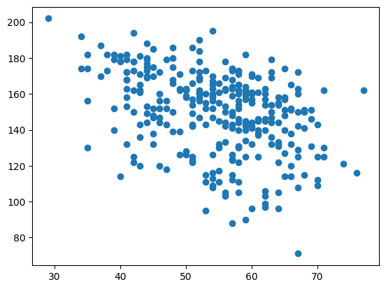
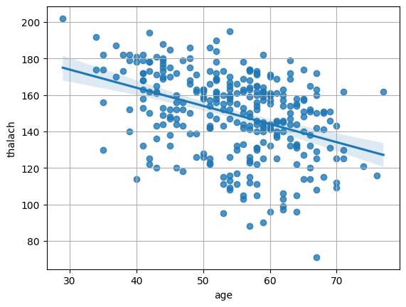

27. Exploratory/Inferential Analysis on the Heart Disease Dataset#
pip install ucimlrepo
Collecting ucimlrepo
Downloading ucimlrepo-0.0.7-py3-none-any.whl.metadata (5.5 kB)
Requirement already satisfied: pandas>=1.0.0 in /usr/local/lib/python3.10/dist-packages (from ucimlrepo) (2.2.2)
Requirement already satisfied: certifi>=2020.12.5 in /usr/local/lib/python3.10/dist-packages (from ucimlrepo) (2024.8.30)
Requirement already satisfied: numpy>=1.22.4 in /usr/local/lib/python3.10/dist-packages (from pandas>=1.0.0->ucimlrepo) (1.26.4)
Requirement already satisfied: python-dateutil>=2.8.2 in /usr/local/lib/python3.10/dist-packages (from pandas>=1.0.0->ucimlrepo) (2.8.2)
Requirement already satisfied: pytz>=2020.1 in /usr/local/lib/python3.10/dist-packages (from pandas>=1.0.0->ucimlrepo) (2024.2)
Requirement already satisfied: tzdata>=2022.7 in /usr/local/lib/python3.10/dist-packages (from pandas>=1.0.0->ucimlrepo) (2024.2)
Requirement already satisfied: six>=1.5 in /usr/local/lib/python3.10/dist-packages (from python-dateutil>=2.8.2->pandas>=1.0.0->ucimlrepo) (1.16.0)
Downloading ucimlrepo-0.0.7-py3-none-any.whl (8.0 kB)
Installing collected packages: ucimlrepo
Successfully installed ucimlrepo-0.0.7
Carichiamo i dati dal repository di UCI ML
from ucimlrepo import fetch_ucirepo
# fetch dataset
heart_disease = fetch_ucirepo(id=45)
# data (as pandas dataframes)
X = heart_disease.data.features
y = heart_disease.data.targets
data = X.join(y)
data
| age | sex | cp | trestbps | chol | fbs | restecg | thalach | exang | oldpeak | slope | ca | thal | num | |
|---|---|---|---|---|---|---|---|---|---|---|---|---|---|---|
| 0 | 63 | 1 | 1 | 145 | 233 | 1 | 2 | 150 | 0 | 2.3 | 3 | 0.0 | 6.0 | 0 |
| 1 | 67 | 1 | 4 | 160 | 286 | 0 | 2 | 108 | 1 | 1.5 | 2 | 3.0 | 3.0 | 2 |
| 2 | 67 | 1 | 4 | 120 | 229 | 0 | 2 | 129 | 1 | 2.6 | 2 | 2.0 | 7.0 | 1 |
| 3 | 37 | 1 | 3 | 130 | 250 | 0 | 0 | 187 | 0 | 3.5 | 3 | 0.0 | 3.0 | 0 |
| 4 | 41 | 0 | 2 | 130 | 204 | 0 | 2 | 172 | 0 | 1.4 | 1 | 0.0 | 3.0 | 0 |
| ... | ... | ... | ... | ... | ... | ... | ... | ... | ... | ... | ... | ... | ... | ... |
| 298 | 45 | 1 | 1 | 110 | 264 | 0 | 0 | 132 | 0 | 1.2 | 2 | 0.0 | 7.0 | 1 |
| 299 | 68 | 1 | 4 | 144 | 193 | 1 | 0 | 141 | 0 | 3.4 | 2 | 2.0 | 7.0 | 2 |
| 300 | 57 | 1 | 4 | 130 | 131 | 0 | 0 | 115 | 1 | 1.2 | 2 | 1.0 | 7.0 | 3 |
| 301 | 57 | 0 | 2 | 130 | 236 | 0 | 2 | 174 | 0 | 0.0 | 2 | 1.0 | 3.0 | 1 |
| 302 | 38 | 1 | 3 | 138 | 175 | 0 | 0 | 173 | 0 | 0.0 | 1 | NaN | 3.0 | 0 |
303 rows × 14 columns
#import pandas as pd
#pd.read_csv('heart.csv')
data.info()
<class 'pandas.core.frame.DataFrame'>
RangeIndex: 303 entries, 0 to 302
Data columns (total 14 columns):
# Column Non-Null Count Dtype
--- ------ -------------- -----
0 age 303 non-null int64
1 sex 303 non-null int64
2 cp 303 non-null int64
3 trestbps 303 non-null int64
4 chol 303 non-null int64
5 fbs 303 non-null int64
6 restecg 303 non-null int64
7 thalach 303 non-null int64
8 exang 303 non-null int64
9 oldpeak 303 non-null float64
10 slope 303 non-null int64
11 ca 299 non-null float64
12 thal 301 non-null float64
13 num 303 non-null int64
dtypes: float64(3), int64(11)
memory usage: 33.3 KB
for column in data.columns:
x = data[column].isna().sum()
print("Number of NaN in column", column, "is", x)
Number of NaN in column age is 0
Number of NaN in column sex is 0
Number of NaN in column cp is 0
Number of NaN in column trestbps is 0
Number of NaN in column chol is 0
Number of NaN in column fbs is 0
Number of NaN in column restecg is 0
Number of NaN in column thalach is 0
Number of NaN in column exang is 0
Number of NaN in column oldpeak is 0
Number of NaN in column slope is 0
Number of NaN in column ca is 4
Number of NaN in column thal is 2
Number of NaN in column num is 0
import seaborn as sns
sns.pairplot(data)
<seaborn.axisgrid.PairGrid at 0x7b5cf0507370>
data['num'].unique()
array([0, 2, 1, 3, 4])
27.1. Does age affect maximum heart rate?#
from matplotlib import pyplot as plt
plt.scatter(data['age'], data['thalach'])
plt.show()

from scipy.stats import pearsonr
pearsonr(data['age'], data['thalach'])
PearsonRResult(statistic=-0.3938058059868209, pvalue=1.1092756352878365e-12)
sns.regplot(data, x='age', y='thalach')
plt.grid()

from statsmodels.formula.api import ols
ols("thalach ~ age", data).fit().summary()
| Dep. Variable: | thalach | R-squared: | 0.155 |
|---|---|---|---|
| Model: | OLS | Adj. R-squared: | 0.152 |
| Method: | Least Squares | F-statistic: | 55.25 |
| Date: | Thu, 21 Nov 2024 | Prob (F-statistic): | 1.11e-12 |
| Time: | 16:54:49 | Log-Likelihood: | -1352.3 |
| No. Observations: | 303 | AIC: | 2709. |
| Df Residuals: | 301 | BIC: | 2716. |
| Df Model: | 1 | ||
| Covariance Type: | nonrobust |
| coef | std err | t | P>|t| | [0.025 | 0.975] | |
|---|---|---|---|---|---|---|
| Intercept | 203.8634 | 7.399 | 27.553 | 0.000 | 189.303 | 218.424 |
| age | -0.9966 | 0.134 | -7.433 | 0.000 | -1.261 | -0.733 |
| Omnibus: | 19.198 | Durbin-Watson: | 1.744 |
|---|---|---|---|
| Prob(Omnibus): | 0.000 | Jarque-Bera (JB): | 21.705 |
| Skew: | -0.654 | Prob(JB): | 1.94e-05 |
| Kurtosis: | 2.922 | Cond. No. | 338. |
Notes:
[1] Standard Errors assume that the covariance matrix of the errors is correctly specified.
import seaborn as sns
sns.pairplot(data.drop(['cp','fbs','restecg','exang','slope','ca','thal'], axis=1), hue='sex')
<seaborn.axisgrid.PairGrid at 0x7b5cd56825c0>
data['sex'].value_counts().plot.bar()
<Axes: xlabel='sex'>
data['sex'].value_counts(normalize=True).plot.bar()
<Axes: xlabel='sex'>
pd.crosstab(data['sex'], data['num'],normalize='index').plot.bar(stacked=True)
<Axes: xlabel='sex'>
pd.crosstab(data['sex'], data['num']).plot.bar(stacked=True)
<Axes: xlabel='sex'>
from scipy.stats import chi2_contingency
from scipy.stats.contingency import association
# Perform the Chi-Square Test for Independence
contingency_table = pd.crosstab(data['sex'], data['num'])
chi2, p, _, exp_freq = chi2_contingency(contingency_table)
# Set the significance level (alpha)
alpha = 0.05
# Print the results
print("Chi-Square Statistic:", chi2)
print("p-value:", p)
print("Cramer's V:", association(contingency_table))
# Interpret the results
if p < alpha:
print("\nThere is a significant association between 'Sex' and 'survived'.")
else:
print("\nThere is no significant association between 'Sex' and 'survived'.")
Chi-Square Statistic: 23.425407307562654
p-value: 0.00010410590365461076
Cramer's V: 0.27804959139060786
There is a significant association between 'Sex' and 'survived'.
data_binary = data.copy()
data_binary['num'] = data_binary['num'].apply(lambda x: 1 if x >= 1 else 0)
crosstab_binary = pd.crosstab(data_binary['sex'], data_binary['num'])
crosstab_binary
| num | 0 | 1 |
|---|---|---|
| sex | ||
| 0 | 72 | 25 |
| 1 | 92 | 114 |
from scipy.stats.contingency import relative_risk
relative_risk(crosstab_binary[1][1], crosstab_binary[1].sum(), crosstab_binary[0][1], crosstab_binary[0].sum())
#relative_risk(contingency['Exposed']['Diseased'],contingency['Exposed'].sum(),contingency['Non Exposed']['Diseased'], contingency['Non Exposed'].sum())
RelativeRiskResult(relative_risk=1.4619956208945886, exposed_cases=114, exposed_total=139, control_cases=92, control_total=164)
# prompt: can you invert the rows of crosstab_binary
crosstab_binary_inverted = crosstab_binary.iloc[::-1]
crosstab_binary_inverted = crosstab_binary_inverted[[1,0]]
crosstab_binary_inverted
| num | 1 | 0 |
|---|---|---|
| sex | ||
| 1 | 114 | 92 |
| 0 | 25 | 72 |
from scipy.stats.contingency import odds_ratio
odds_ratio(crosstab_binary_inverted)
OddsRatioResult(statistic=3.55354424429681)
27.2. Logistic regression analysis on binarized data#
from statsmodels.formula.api import logit
logit("num ~ sex", data_binary).fit().summary()
Optimization terminated successfully.
Current function value: 0.650054
Iterations 5
| Dep. Variable: | num | No. Observations: | 303 |
|---|---|---|---|
| Model: | Logit | Df Residuals: | 301 |
| Method: | MLE | Df Model: | 1 |
| Date: | Thu, 21 Nov 2024 | Pseudo R-squ.: | 0.05754 |
| Time: | 17:36:26 | Log-Likelihood: | -196.97 |
| converged: | True | LL-Null: | -208.99 |
| Covariance Type: | nonrobust | LLR p-value: | 9.390e-07 |
| coef | std err | z | P>|z| | [0.025 | 0.975] | |
|---|---|---|---|---|---|---|
| Intercept | -1.0578 | 0.232 | -4.557 | 0.000 | -1.513 | -0.603 |
| sex | 1.2722 | 0.271 | 4.692 | 0.000 | 0.741 | 1.804 |
import numpy as np
odds = np.exp(-1.0578)
p = odds/(1+odds)
p
0.2577301019775979
np.exp(1.2722)
3.568695061578707
odds_m = odds*np.exp(1.2722)
odds_m/(1+odds_m)
0.5533956185614641
27.3. Multinomial Logistic Regression Analysis#
from statsmodels.formula.api import mnlogit
mnlogit("num ~ sex", data).fit().summary()
Optimization terminated successfully.
Current function value: 1.239318
Iterations 7
| Dep. Variable: | num | No. Observations: | 303 |
|---|---|---|---|
| Model: | MNLogit | Df Residuals: | 295 |
| Method: | MLE | Df Model: | 4 |
| Date: | Thu, 21 Nov 2024 | Pseudo R-squ.: | 0.03141 |
| Time: | 17:46:39 | Log-Likelihood: | -375.51 |
| converged: | True | LL-Null: | -387.69 |
| Covariance Type: | nonrobust | LLR p-value: | 6.775e-05 |
| num=1 | coef | std err | z | P>|z| | [0.025 | 0.975] |
|---|---|---|---|---|---|---|
| Intercept | -2.0794 | 0.354 | -5.882 | 0.000 | -2.772 | -1.386 |
| sex | 1.3863 | 0.397 | 3.492 | 0.000 | 0.608 | 2.164 |
| num=2 | coef | std err | z | P>|z| | [0.025 | 0.975] |
| Intercept | -2.3308 | 0.396 | -5.887 | 0.000 | -3.107 | -1.555 |
| sex | 1.1763 | 0.450 | 2.617 | 0.009 | 0.295 | 2.057 |
| num=3 | coef | std err | z | P>|z| | [0.025 | 0.975] |
| Intercept | -2.3308 | 0.396 | -5.887 | 0.000 | -3.107 | -1.555 |
| sex | 1.1412 | 0.451 | 2.531 | 0.011 | 0.257 | 2.025 |
| num=4 | coef | std err | z | P>|z| | [0.025 | 0.975] |
| Intercept | -3.5835 | 0.717 | -4.999 | 0.000 | -4.989 | -2.178 |
| sex | 1.4596 | 0.785 | 1.860 | 0.063 | -0.078 | 2.998 |
odds1=np.exp(-2.0794)
odds2=np.exp(-2.0794)*np.exp(1.3863)
p1 = odds1/(1+odds1)
p2 = odds2/(1+odds2)
print(p1, p2)
0.11111521405935315 0.3333438179846534